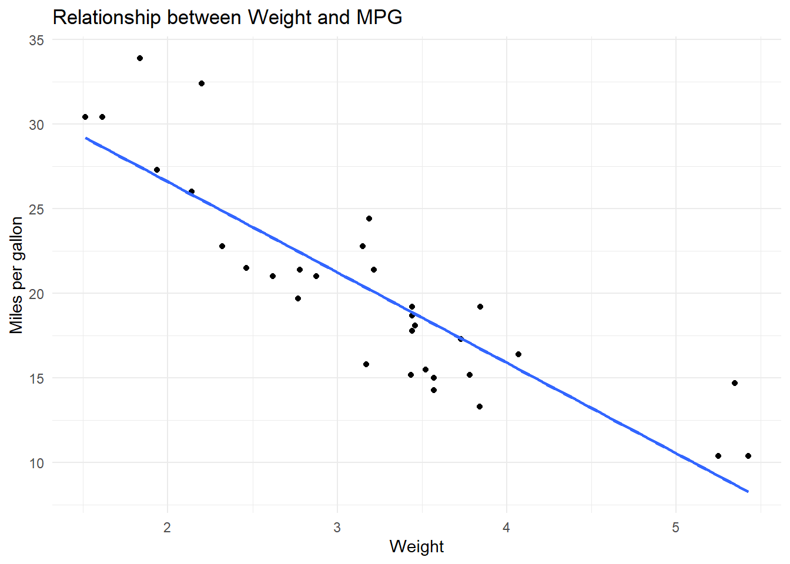

flowchart TD A[Research Question] --> B[Project Folder] B --> C[Raw Data] C --> D[Data Cleaning] D --> E[Analysis] E --> F[Tables] E --> G[Figures] F --> H[Quarto Report] G --> H H --> I[Render Output] I --> J[HTML / PDF / Website] J --> K[Share or Publish]
Advanced 15. Nghiên cứu Tái lập và Báo cáo Học thuật
Reproducible Research and Reporting with R and Quarto
Tổng quan bài học
TipKết quả học tập (Learning Outcomes)
Sau khi hoàn thành bài học này, học viên có thể:
- Hiểu nghiên cứu tái lập (Reproducible Research)
- Tổ chức project R khoa học và dễ bảo trì
- Xây dựng workflow từ dữ liệu thô đến báo cáo cuối cùng
- Sử dụng Quarto để tạo báo cáo HTML, PDF hoặc website
- Quản lý code chunks trong
.qmd - Tạo bảng publication-ready
- Tạo hình publication-ready
- Lưu kết quả phân tích có hệ thống
- Viết báo cáo động (Dynamic Report)
- Kiểm tra lỗi render
- Chuẩn bị project cho chia sẻ, giảng dạy hoặc công bố
- Hiểu vai trò của Git/GitHub ở mức nhập môn
NoteLogic bài học (Module Logic)
Bài học này trả lời câu hỏi:
Làm thế nào để biến toàn bộ quá trình phân tích dữ liệu thành một project rõ ràng, tái lập và có thể xuất bản?
Quy trình:
Research Question
↓
Project Structure
↓
Raw Data
↓
Cleaning Script
↓
Analysis Script
↓
Tables and Figures
↓
Quarto Report
↓
Render
↓
Share / PublishReproducible research workflow
1. Reproducible research là gì?
NoteKiến thức nền tảng (Knowledge Notes)
Là gì? (What?)
Nghiên cứu tái lập (Reproducible Research) là cách tổ chức dữ liệu, code, kết quả và báo cáo sao cho người khác hoặc chính bạn có thể chạy lại phân tích và tạo ra kết quả tương tự.
Tại sao cần? (Why?)
Reproducible research giúp:
- Giảm lỗi phân tích
- Dễ kiểm tra kết quả
- Dễ cập nhật báo cáo
- Tăng minh bạch nghiên cứu
- Hỗ trợ công bố quốc tế
- Dễ chia sẻ với đồng nghiệp và sinh viên
- Tiết kiệm thời gian khi cần sửa dữ liệu
Khi nào dùng? (When?)
Nên dùng cho mọi project nghiên cứu:
- Luận văn
- Bài báo
- Báo cáo nội bộ
- Khóa học
- Dự án dữ liệu
- Phân tích khảo sát
- Meta-analysis
- Bibliometric analysis
ImportantỨng dụng trong nghiên cứu (Research Application)
Một project tái lập tốt có thể trả lời:
Dữ liệu đến từ đâu?
Code làm gì?
Kết quả nào được tạo từ code nào?
Bảng và hình có thể tạo lại được không?
Báo cáo có render lại được không?
WarningSai lầm thường gặp (Common Mistakes)
Người học thường mắc lỗi:
- Lưu tất cả file vào một thư mục
- Đặt tên file không rõ ràng
- Chỉnh số liệu thủ công trong Excel
- Copy hình từ R rồi sửa bằng tay
- Không lưu code tạo bảng/hình
- Dùng đường dẫn tuyệt đối từ máy cá nhân
- Không render lại toàn bộ báo cáo trước khi gửi
2. Cấu trúc project chuẩn
TipKết quả học tập (Learning Outcomes)
Sau phần này, học viên có thể tạo cấu trúc folder phù hợp cho một project nghiên cứu.
NoteKiến thức nền tảng (Knowledge Notes)
Một project tốt nên có cấu trúc rõ:
project-folder/
│
├── _quarto.yml
├── index.qmd
├── README.md
│
├── data/
│ ├── raw/
│ ├── processed/
│ └── dictionary/
│
├── R/
│ ├── 01_clean_data.R
│ ├── 02_analysis.R
│ └── 03_visualization.R
│
├── tables/
├── figures/
├── reports/
├── outputs/
└── advanced/Tạo folder bằng R
dir.create("data/raw", recursive = TRUE, showWarnings = FALSE)
dir.create("data/processed", recursive = TRUE, showWarnings = FALSE)
dir.create("data/dictionary", recursive = TRUE, showWarnings = FALSE)
dir.create("R", showWarnings = FALSE)
dir.create("tables", showWarnings = FALSE)
dir.create("figures", showWarnings = FALSE)
dir.create("reports", showWarnings = FALSE)
dir.create("outputs", showWarnings = FALSE)Không nên để dữ liệu thô, dữ liệu đã xử lý, hình, bảng và code lẫn lộn trong cùng một thư mục.
3. Quy tắc đặt tên file
TipKết quả học tập (Learning Outcomes)
Sau phần này, học viên biết đặt tên file rõ, dễ đọc và dễ sắp xếp.
NoteKiến thức nền tảng (Knowledge Notes)
Tên file tốt nên:
- Không có dấu tiếng Việt
- Không có khoảng trắng
- Có số thứ tự nếu cần
- Có ngày nếu là version quan trọng
- Mô tả đúng nội dung
Ví dụ tốt
01_clean_data.R
02_descriptive_analysis.R
03_regression_models.R
table_1_sample_characteristics.csv
figure_1_likert_distribution.png
report_final.qmdVí dụ không nên
data moi.xlsx
final final final.docx
phan tich lan cuoi.R
hinh dep.png4. Quarto là gì?
NoteKiến thức nền tảng (Knowledge Notes)
Là gì? (What?)
Quarto là hệ thống viết tài liệu khoa học động, cho phép kết hợp:
- Text
- R code
- Output
- Tables
- Figures
- Citations
- Website
- Slides
Tại sao cần? (Why?)
Quarto giúp báo cáo tự động cập nhật khi dữ liệu hoặc code thay đổi.
Khi nào dùng? (When?)
Dùng cho:
- Báo cáo nghiên cứu
- Website khóa học
- Luận văn
- Bài giảng
- Tài liệu hướng dẫn
- Dashboard tĩnh
- Manuscript draft
Cấu trúc file .qmd
---
title: "My Research Report"
format: html
---
# Introduction
This report analyzes the dataset.
::: {.cell}
```{.r .cell-code}
summary(cars)
```
::: {.cell-output .cell-output-stdout}
```
speed dist
Min. : 4.0 Min. : 2.00
1st Qu.:12.0 1st Qu.: 26.00
Median :15.0 Median : 36.00
Mean :15.4 Mean : 42.98
3rd Qu.:19.0 3rd Qu.: 56.00
Max. :25.0 Max. :120.00
```
:::
:::
WarningSai lầm thường gặp (Common Mistakes)
Không được trộn CSS vào _quarto.yml.
CSS phải nằm trong file .css, còn YAML nằm trong _quarto.yml.
5. YAML cơ bản trong Quarto
TipKết quả học tập (Learning Outcomes)
Sau phần này, học viên hiểu YAML header của .qmd.
YAML cho report
---
title: "Research Report"
subtitle: "Data Analysis with R"
author: "Your Name"
format:
html:
toc: true
number-sections: true
---YAML cho website
project:
type: website
output-dir: _site
website:
title: "R for Research and Data Analytics"
format:
html:
theme: flatly
toc: true
WarningSai lầm thường gặp (Common Mistakes)
YAML rất nhạy với indentation.
Sai:
format:
html:
theme: flatlyĐúng:
format:
html:
theme: flatly6. Code chunks trong Quarto
NoteKiến thức nền tảng (Knowledge Notes)
Code chunk là nơi chạy R code trong tài liệu.
Chunk cơ bản
::: {.cell}
```{.r .cell-code}
summary(mtcars)
```
::: {.cell-output .cell-output-stdout}
```
mpg cyl disp hp
Min. :10.40 Min. :4.000 Min. : 71.1 Min. : 52.0
1st Qu.:15.43 1st Qu.:4.000 1st Qu.:120.8 1st Qu.: 96.5
Median :19.20 Median :6.000 Median :196.3 Median :123.0
Mean :20.09 Mean :6.188 Mean :230.7 Mean :146.7
3rd Qu.:22.80 3rd Qu.:8.000 3rd Qu.:326.0 3rd Qu.:180.0
Max. :33.90 Max. :8.000 Max. :472.0 Max. :335.0
drat wt qsec vs
Min. :2.760 Min. :1.513 Min. :14.50 Min. :0.0000
1st Qu.:3.080 1st Qu.:2.581 1st Qu.:16.89 1st Qu.:0.0000
Median :3.695 Median :3.325 Median :17.71 Median :0.0000
Mean :3.597 Mean :3.217 Mean :17.85 Mean :0.4375
3rd Qu.:3.920 3rd Qu.:3.610 3rd Qu.:18.90 3rd Qu.:1.0000
Max. :4.930 Max. :5.424 Max. :22.90 Max. :1.0000
am gear carb
Min. :0.0000 Min. :3.000 Min. :1.000
1st Qu.:0.0000 1st Qu.:3.000 1st Qu.:2.000
Median :0.0000 Median :4.000 Median :2.000
Mean :0.4062 Mean :3.688 Mean :2.812
3rd Qu.:1.0000 3rd Qu.:4.000 3rd Qu.:4.000
Max. :1.0000 Max. :5.000 Max. :8.000
```
:::
:::Chunk options quan trọng
| Option | Ý nghĩa |
|---|---|
eval: false |
Hiện code nhưng không chạy |
echo: false |
Chạy code nhưng không hiện code |
warning: false |
Ẩn warning |
message: false |
Ẩn message |
fig-width |
Chiều rộng hình |
fig-height |
Chiều cao hình |
out-width |
Chiều rộng output trên trang |
Ví dụ
::: {.cell}
::: {.cell-output-display}
{width=100%}
:::
:::7. Data pipeline
TipKết quả học tập (Learning Outcomes)
Sau phần này, học viên có thể thiết kế pipeline từ raw data đến clean data.
NoteKiến thức nền tảng (Knowledge Notes)
Data pipeline tốt nên tách:
Raw data
↓
Cleaning script
↓
Processed data
↓
Analysis script
↓
OutputsVí dụ cleaning script
library(tidyverse)
library(readxl)
library(janitor)
raw_data <- read_excel("data/raw/survey_data.xlsx") |>
clean_names()
clean_data <- raw_data |>
filter(!is.na(outcome)) |>
mutate(
group = factor(group),
outcome = as.numeric(outcome)
)
write_csv(
clean_data,
"data/processed/clean_survey_data.csv"
)
ImportantỨng dụng trong nghiên cứu (Research Application)
Không nên sửa dữ liệu thô trực tiếp.
Luôn giữ dữ liệu gốc trong data/raw/.
8. Bảng publication-ready
TipKết quả học tập (Learning Outcomes)
Sau phần này, học viên có thể tạo bảng kết quả đẹp bằng R.
Cài đặt package
install.packages("gt")
install.packages("gtsummary")
install.packages("modelsummary")Ví dụ bảng bằng gt
library(tidyverse)
library(gt)
table_demo <- mtcars |>
group_by(cyl) |>
summarise(
n = n(),
mean_mpg = mean(mpg),
sd_mpg = sd(mpg),
.groups = "drop"
)
table_demo |>
gt() |>
tab_header(
title = "Descriptive Statistics by Cylinder"
) |>
fmt_number(
columns = c(mean_mpg, sd_mpg),
decimals = 2
)| Descriptive Statistics by Cylinder | |||
| cyl | n | mean_mpg | sd_mpg |
|---|---|---|---|
| 4 | 11 | 26.66 | 4.51 |
| 6 | 7 | 19.74 | 1.45 |
| 8 | 14 | 15.10 | 2.56 |
Xuất bảng
table_demo |>
gt() |>
gtsave("tables/table_1_descriptive.html")9. Hình publication-ready
TipKết quả học tập (Learning Outcomes)
Sau phần này, học viên có thể lưu hình chất lượng cao.
Tạo hình
library(ggplot2)
fig_demo <- ggplot(mtcars, aes(x = wt, y = mpg)) +
geom_point() +
geom_smooth(method = "lm", se = FALSE) +
labs(
title = "Relationship between Weight and MPG",
x = "Weight",
y = "Miles per gallon"
) +
theme_minimal()
fig_demo
Lưu hình
ggsave(
filename = "figures/figure_1_weight_mpg.png",
plot = fig_demo,
width = 8,
height = 5,
dpi = 300
)Với bài báo hoặc báo cáo chính thức, nên lưu hình ở dpi = 300.
10. Báo cáo động
NoteKiến thức nền tảng (Knowledge Notes)
Báo cáo động (Dynamic Report) là báo cáo trong đó bảng, hình và kết quả được tạo trực tiếp từ code.
Khi dữ liệu thay đổi, chỉ cần render lại báo cáo.
Inline R code
Trong Quarto, có thể viết inline R:
The dataset contains 32 observations.Kết quả sẽ tự động cập nhật khi dữ liệu thay đổi.
ImportantỨng dụng trong nghiên cứu (Research Application)
Inline code giúp tránh lỗi copy-paste số liệu.
11. Render Quarto
TipKết quả học tập (Learning Outcomes)
Sau phần này, học viên biết render báo cáo và website.
Render một file
quarto render report.qmdRender file trong thư mục
quarto render advanced/adv-15-reproducible.qmdPreview website
quarto previewRender toàn website
quarto render
WarningSai lầm thường gặp (Common Mistakes)
Nếu đang đứng trong thư mục advanced, không chạy:
quarto render advanced/adv-15-reproducible.qmdvì Quarto sẽ tìm:
advanced/advanced/adv-15-reproducible.qmd12. Debug lỗi Quarto thường gặp
NoteKiến thức nền tảng (Knowledge Notes)
Quarto thường báo lỗi theo chunk.
Ví dụ:
Quitting from adv-13-anova.qmd:526-551 [unnamed-chunk-17]Nghĩa là lỗi nằm ở chunk gần dòng 526–551.
Lỗi YAML
Nguyên nhân thường gặp:
- Sai indentation
- Thiếu dấu
--- - Dán CSS vào YAML
- Dấu
:không nằm trong dấu ngoặc kép
Lỗi đường dẫn
Nguyên nhân thường gặp:
- Render sai thư mục
- File không nằm đúng folder
- Dùng đường dẫn tuyệt đối
Lỗi package
Nguyên nhân thường gặp:
- Package chưa cài
- Phiên bản package khác
- Hàm không được export
Lỗi object not found
Nguyên nhân thường gặp:
- Chunk trước chưa chạy
- Object chỉ được tạo trong
if() - Tên biến sai
- Dataset không có cột đó
- Đọc dòng báo lỗi cuối cùng.
- Xem file và dòng Quarto báo.
- Kiểm tra object hoặc biến bị thiếu.
- Kiểm tra package đã cài chưa.
- Chạy từng chunk từ trên xuống.
- Dùng
eval: falsecho phần code minh họa không bắt buộc. - Render lại toàn file.
13. Git và GitHub ở mức nhập môn
NoteKiến thức nền tảng (Knowledge Notes)
Git là gì?
Git là hệ thống quản lý phiên bản.
GitHub là gì?
GitHub là nền tảng lưu trữ project Git online.
Tại sao cần?
Git/GitHub giúp:
- Lưu lịch sử thay đổi
- Khôi phục phiên bản cũ
- Chia sẻ project
- Hợp tác nhóm
- Xuất bản website Quarto
Lệnh Git cơ bản
git init
git add .
git commit -m "Initial commit"
git statusPush lên GitHub
git remote add origin https://github.com/username/project-name.git
git branch -M main
git push -u origin main
WarningSai lầm thường gặp (Common Mistakes)
Không nên đưa dữ liệu nhạy cảm hoặc dữ liệu cá nhân lên GitHub public.
14. README file
TipKết quả học tập (Learning Outcomes)
Sau phần này, học viên biết viết README cho project.
README template
# Project Title
## Description
This project analyzes ...
## Folder Structure
- `data/raw/`: raw data
- `data/processed/`: cleaned data
- `R/`: scripts
- `figures/`: exported figures
- `tables/`: exported tables
- `reports/`: final reports
## How to Reproduce
1. Open the R project.
2. Run `R/01_clean_data.R`.
3. Run `R/02_analysis.R`.
4. Render `report.qmd`.
## Required Packages
- tidyverse
- readxl
- janitor
- ggplot2
- gt15. Quarto website publishing
NoteKiến thức nền tảng (Knowledge Notes)
Quarto website có thể publish bằng:
- GitHub Pages
- Netlify
- Posit Connect
- Local HTML folder
Render website
quarto renderOutput thường nằm trong:
_site/GitHub Pages logic
Quarto project
↓
Render
↓
_site folder
↓
GitHub Pages
↓
Public website
ImportantỨng dụng trong khóa học
Với website khóa R, mỗi .qmd module là một trang.
Sidebar trong _quarto.yml quyết định điều hướng.
16. Final course project
ImportantDự án tổng kết (Final Capstone Project)
Chủ đề
Reproducible Research Portfolio
Sản phẩm đầu ra
Học viên tạo một project hoàn chỉnh gồm:
Research_Portfolio/
│
├── data/
├── R/
├── figures/
├── tables/
├── reports/
├── report.qmd
├── README.md
└── _quarto.ymlBáo cáo cuối cùng
final_research_report.htmlNội dung báo cáo
- Research question
- Dataset description
- Data cleaning workflow
- Descriptive statistics
- Exploratory visualization
- Main analysis
- Tables
- Figures
- Interpretation
- Limitations
- Reproducibility statement
17. Reproducibility statement
NoteKiến thức nền tảng (Knowledge Notes)
Một báo cáo tốt nên có reproducibility statement.
Template
All analyses were conducted in R using a reproducible Quarto workflow. The project folder contains raw data, cleaning scripts, analysis scripts, figures, tables, and the final report. The report can be regenerated by rendering the Quarto document from the project root directory.18. Checklist cuối khóa
Trước khi hoàn thành project, kiểm tra:
19. Bài tập thực hành
ImportantBài tập thực hành (Practice Exercise)
Hãy thực hiện:
- Tạo project folder mới.
- Tạo các thư mục
data,R,figures,tables,reports. - Tạo một file
README.md. - Tạo một file
report.qmd. - Viết YAML header.
- Import một dataset.
- Tạo bảng mô tả.
- Tạo ít nhất một hình.
- Viết kết quả bằng inline R.
- Render báo cáo thành HTML.
20. Thử thách
WarningThử thách (Challenge)
Tình huống
Bạn có một project nghiên cứu với:
- Một file Excel dữ liệu khảo sát
- Một script làm sạch
- Một script phân tích
- Nhiều hình được copy thủ công
- Một báo cáo Word
Câu hỏi
- Làm thế nào để chuyển project này thành reproducible project?
- Cần tổ chức lại folder ra sao?
- Hình và bảng nên tạo thế nào?
- Báo cáo nên viết bằng gì?
- Cần chú ý gì nếu đưa project lên GitHub?
TipGợi ý trả lời (Suggested Solution)
Một câu trả lời tốt nên nêu:
- Giữ dữ liệu gốc trong
data/raw. - Viết script cleaning riêng.
- Lưu dữ liệu đã xử lý trong
data/processed. - Tạo bảng và hình bằng code.
- Viết báo cáo bằng Quarto.
- Thêm README.
- Không đưa dữ liệu nhạy cảm lên GitHub public.
21. Kết thúc khóa học
NoteWhat Next?
Bạn đã hoàn thành toàn bộ chuỗi Advanced Analytics.
Lộ trình đầy đủ:
- Descriptive Diagnostics
- Advanced Regression
- Regularized Regression
- Advanced SEM
- Bayesian Statistics
- Monte Carlo Simulation
- Simpson’s Paradox
- Advanced Likert Analysis
- Advanced Visualization Gallery
- Research Toolkit
- Meta-analysis
- Bibliometric Analysis
- Experimental Design and ANOVA
- Mixed Models and Longitudinal Data
- Reproducible Research and Reporting